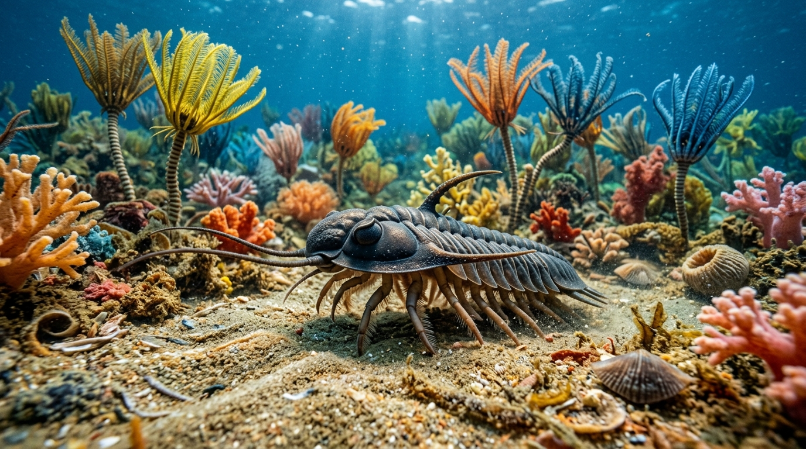
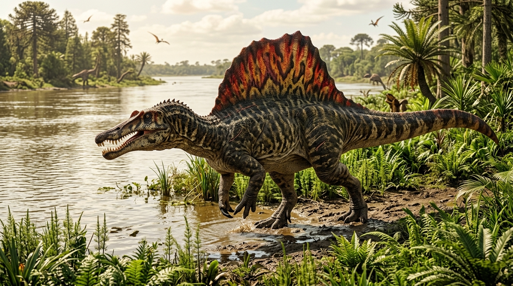
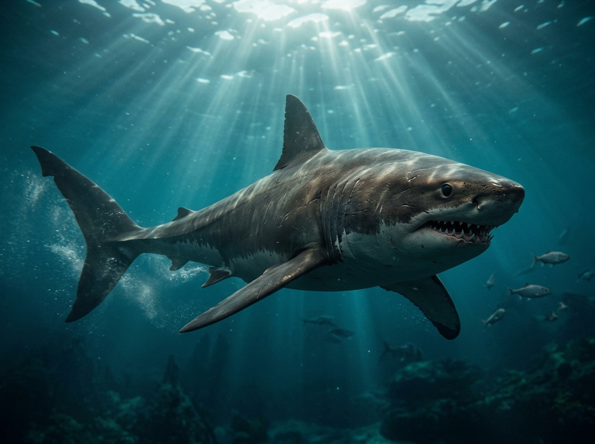
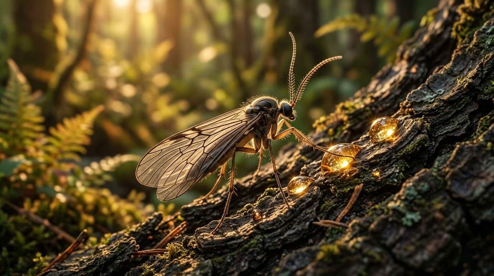

Objavte pravek v našej vitrínke
Geologické obdobia & naše fosílie na časovej osi
Prvohory
(Paleozoikum • 541 – 252 mil. r.)
Druhohory
(Mezozoikum • 252 – 66 mil. r.)
Kenozoikum
(Treťohory & Dnes • 66 mil. r. – Súčasnosť)
Kambrium
541 mil. r.

Vitrínka • 420 mil. r.
Trilobit
Phacops • Devón
Devón
420 mil. r.
Karbón & Perm
300 mil. r.
Trias
252 mil. r.
Jura
150 mil. r.
Krieda (stred)
98 mil. r.

Vitrínka • 98 mil. r.
Spinosaurus
Cenoman • Zub
Vitrínka • 70 mil. r.
Mosasaurus
Maastricht • Zub
Krieda (záver)
70 mil. r.
Pád asteroidu
66 mil. r.
💥
Koniec dinosaurov
K-Pg vymieranie (66 mil. r.)
Eocén (more)
50 mil. r.

Vitrínka • 50 mil. r.
Žralok Otodus
Obliquus • Zub

Vitrínka • 45 mil. r.
Jantár s hmyzom
Inklúzia v živici
Eocén (les)
45 mil. r.
Súčasnosť
Dnes (0 r.)
🧍
Človek (Dnes)
Homo sapiens • Dnes
🦕 Podoba tvora
🦴 Fosília vo vitrínke
📏 Porovnanie s človekom
Exponát